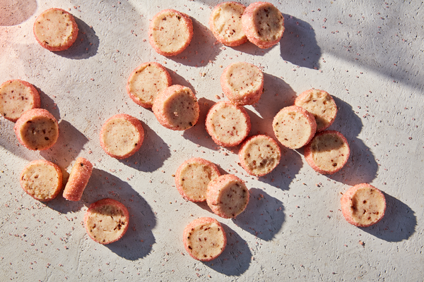

Pierre Hermé’s Ispahan Sablés

Description
Pierre Hermé, France’s most celebrated pastry chef, has created a family of desserts called Ispahan, named for the ancient city in Persia that was famous for roses. Each of the almost 40 members of the clan include the flavors of roses and raspberries
and many include lychees, too. They’re all memorably aromatic and their flavors are haunting. This sablé, a French shortbread, might be the simplest sweet in the family, but its textures and tastes are no less sophisticated – or irresistible –
for being easy slice-and-bakes. The cookies get both their flavor and fragrance from freeze-dried raspberries and rose extract. I’ve been using Star Kay White extract. If you choose a different one, start with just a little and then decide if
you’d like more. Floral flavorings can be tricky – a little is lovely, just a smidge more than that can be too much. —Dorie Greenspan
Ingredients
FOR THE SUGAR:
- ¼ cup (60 grams) sanding sugar
- ¼ teaspoon pure rose extract (like Star Kay White)
- Red liquid food coloring
FOR THE SABLÉS:
- ½ cup (10 grams) freeze-dried raspberries
- 1 ½ cups (204 grams) all-purpose flour
- 1 stick plus 3 tablespoons (155 grams) unsalted butter, at room temperature
- ⅓ cup (67 grams) sugar
- ½ teaspoon pure rose extract (like Star Kay White)
- ¼ teaspoon fleur de sel
Directions
- To make the sugar: Put the sugar, extract and a few drops of coloring in a small zipper-lock plastic bag, seal the bag and shake until the color is even. Add more color if you'd like.
- To make the sablés: Put the raspberries between sheets of wax paper, and crush them with a rolling pin or the bottom of a skillet. Don’t expect perfection — it’s fine to have mostly powder and a few small nuggets. Whisk the raspberries into the
flour.
- Working with a mixer, beat the butter at medium speed until it’s soft and creamy, but not airy, about 2 minutes. Add the sugar, extract and fleur de sel, and beat 3 minutes more. Turn the mixer off, scrape down the bowl, add the flour mixture
all at once and pulse the mixer on and off to begin incorporating the dry ingredients. Mix on low speed until the dough forms soft curds and then starts to clean the sides of the bowl. Give it a few last turns with a spatula, then scrape it
out onto the counter. Divide the dough into 4 pieces, and roll each into an 8-inch-long log.
- Spread the sugar out on a piece of wax paper, and roll the logs in the sugar until they’re completely coated. Wrap each log in plastic wrap, and refrigerate for at least 1 hour, or up to 3 days.
- When you’re ready to bake, position the racks to divide the oven into thirds, and preheat it to 325. Line 2 baking sheets with parchment paper.
- Unwrap the logs, trim the ends if they’re ragged and cut the logs into ½-inch-thick rounds. Place them on the baking sheets, leaving about 2 inches between each round.
- Bake the cookies for 19 to 21 minutes, rotating the sheets top to bottom and front to back after 10 minutes, or until the cookies are firm around the edges and golden brown on the bottom; the tops will remain pale. Rest the sablés for 2 minutes,
then transfer to cooling racks. Serve — or pack into a container — when the cookies come to room temperature.